Manual Instructions
Table of Contents:
To run the system you need to have the following:
Python 2.4 and up.
Swig 1.3 and up: If you want to use the fast version of the Gay-Bernes potential.
AViz 5.6 and up: If you want to render and view images of the simulations you run.
These are present on Phelafel and Tamnun, and can be downloaded on the download page.
All the simulations presented on this website are included with the program.
There is no need to run them again, as both the models and the results are included with the source files.
You can just watch them in AViz if you want and see the statistics.
More details about how to run them on AViz will be explained later.
Once you have downloaded the project, to run it you only need to write in the shell:
./run.sh [MODEL_NAME]
Where [MODEL_NAME] should be replaced with the name of the model you want to use (if you don't write anything it will use the default model).
The [MODEL_NAME] can be one of the following: "2d_small, "3d_small", "2d_large", "3d", "fixed", "sphere" or "default".
You can find more details about each of the above models under "Models" section.
You can also add another model as explained below in "How to write a configuration file" section.
NOTE: You should not write "[MODEL_NAME].py" or give it a path!
The system knows to take it from the models directory automatically.
Additional options for running:
If you need help you can run the following commands for a list of command line arguments and options:
./run.sh -h
OR
./run.sh --help
If you wish to override model parameters from the command line, such as to start from a different initial temperature without creating\changing a configuration file you can run with the command:
./run.sh [MODEL_NAME] INITIAL_TEMPERATURE=___
./run.sh [MODEL_NAME] TWO_SPIN_POTENTIAL=___
In each of the cases, put the desired parameter instead of the "___".
If you have already started a simulation and stopped before it has finished, the system will ask you if you want to continue the simulation.
Select "Y" for "yes" if you do, and "N" for "no" if not.
If you wish to continue a specific run, look for it in the runs directory in the main project directory, and write:
./run.sh [RUN_NAME]
Where [RUN_NAME] should be replaced with the aforementioned name of the run in the runs directory.
If the run is incomplete, it will ask you if you wish to continue it, and resume from where it left off.
First of all, you need to download AViz to be able to peform this.
After running the system you can render the visual model in AViz by running:
./aviz.sh [OUTPUT_TITLE]
Where [OUTPUT_TITLE] should be replaced by the name of the run directory as shown after the simulation finishes, or simply the model that was run (it will take the last one chronologically).
More details on this are under "runs" section.
To configure AViz the way we did to generate the images on this website, follow these instructions.
If you wish to generate some statistics of the simulations you have done, that's also very easy - all you need to do is write in the shell (after finishing the simulations): "
./generate_stat.sh
That will create a web page called "compare_chart.html" inside the folder "web" with all of the statistics neatly displayed.
If you want to add the animations from AViz to those statistics, you should run the same command with an additional flag:
./run.sh --a
OR
./run.sh --aviz
This will add the images as PNG files in the "web/models/[MODEL_NAME]" directory (where [MODEL_NAME] is the name of a model that was run in the simulator).
NOTE: You must have AViz installed in order to use it.
More details about using the statistics page are under the"statistics" section.
 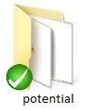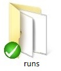
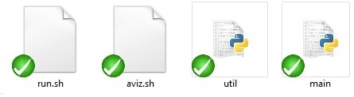
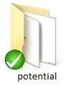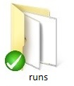
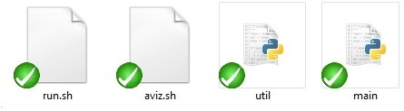

lc.py - This class represents the system that we are working with.
It holds the positions and angles of molecules in a liquid crystal, and can
perform a Monte Carlo Metropolis cooling of the liquid crystal.
constants.py - Contains physical constants such as Boltzman's constant, Planck's constant and the g factor.
It is possible to add other constant here if they are needed.
utils.py - contains some useful methods, some of them can be found in newer editions of Python.
This folder contains the Monte Carlo algorithm methods.
You should not change anything here, unless you know what your'e doing.
This is where all model files are.
A model file contains all of the system, algorithm and potential parameters for a simulation.
If you wish to start a simulation, you can choose a pre-existing model or create your own.
The following models are implemented already and come packaged with the sources:
- "fixed" - The cylinders will stay at their places.
- "sphere" - The cylinders can move, and neighbour lists are used to track the closest neighbours.
- "2d_small" - A system of 3X3 cylinders in 2 dimensions, uses the Gay-Bernes Potential. Periodic boundary conditions in one direction, the other is fixed.
- "3d_small" - A system of 5X5X5 cylinders in 3 dimensions, uses the Gay-Bernes Potential. Periodic boundary conditions in two directions, the other is fixed.
- "2d_large" - A system of 10X10 cylinders in 2 dimensions, uses the Gay-Bernes Potential.Periodic boundary conditions in one direction, the other is fixed.
- "3d" - A system of 10X10X10 cylinders in 3 dimensions, uses the Gay-Bernes Potential, Periodic boundary conditions in two directions, the other is fixed.
- "default" - A system of 5x5 cylindes in 2 dimensions, with fixed positions.
You can also add another one as written below in "How to add a configuration file".
This is where all of the potential implementations are.
A potential is responsible for the way the system models interactions between the molecules.
We have the following potentials approximations implemented:
- "FixedNearestNeighboursPotential" - The nearest neighbours for each molecule are simply those that are within a certain index range.
This is controlled by the model parameter NEAREST_NEIGHBOURS_MAX_INDEX_RANGE.
A value of 3 to that parameter means that for a molecule at index (x,y) for a 2D system, all neighbours in the square from (x-3,y-3) to (x+3,y+3) will be considered in the potential calculation.
- "SphereNearestNeighboursPotential" - The nearest neighbours for each molecule are computed dynamically every few steps to be within a defined sphere.
The candidates are chosen using the same model parameter as above NEAREST_NEIGHBOURS_MAX_INDEX_RANGE.
The model parameter NEAREST_NEIGHBOURS_MAX_RADIUS controls the radius of the sphere from the molecule, in which those candidates must reside to be considered as nearest neighbours.
The model parameter NEAREST_NEIGHBOURS_UPDATE_CYCLES controls the number of Metropolis steps between calculations of those neighbours.
A smaller value will mean a more accurate potential, but also a penalty to performance.
We have the following potentials implemented:
- "LenardJonesPotential" - an explanation of this potential can be found here.
- "GayBernesPotential" - an explanation of this potential can be found here.
You can also add another potential by following the instructions below in "How to add a new potential".
After each run of the simulation the system will save all of the states it has gone through, as well as the ".xyz" files for AViz, in a dedicated run directory.
Inside the "runs" folder you can find a sub folder for each simulation you have run so far.
The run directory will have in its name the name of the model you have run, as well as the date and time.
Any folder like this contains sub folders:
- "output" - Contains the ".xyz" files used by AViz to render the simulation, as well as a ".lst" list file used by AViz to view the system over time.
It also contains a "info.txt" file that records various statistics over time used by the statistics generator.
- states - Contains all the states the system went through during the simulation.
- run.log - A log file with all the simulation details shown during the simulation.
- MODEL_NAME.py - The model file the simulation was run with.
First of all you should go to the library "models", where you can copy the content of the configuration file "default.py" and name your file as you wish (with a ".py" suffix of course).
You can also copy another file that is more suitable to your needs, and change that.
Now you only need to change the parameters in your file, so it would be like the system you want to model.
The following are some common or important system parameters:
- DIMENSIONS = [number of cylinders in x direction, number of cylinders in y direction, number of cylinders in z direction]
- BOUNDARY_CONDITIONS = ["Boundary condition for the first direction", "Boundary condition for the second direction",...,"Boundary condition for the n'th direction"] - "P" for Periodic, "F" for fixed.
- INITIAL_SPACING = [The spacing between spin locations in x direction, The spacing between spin locations in y direction, The spacing between spin locations in z direction]
- INITIAL_SPIN_ORIENTATION = [The initial spin orientation vector in x direction, The initial spin orientation vector in y direction, The initial spin orientation vector in z direction]
There are more parameters you can change but everything is explained in the file itself as well.
You can change all the potential parameter - 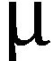,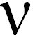 ,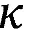 , ,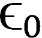
,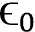
- POTENTIAL = The name of the potential approximation you want to use.
You can choose from: "FixedNearestNeighboursPotential" or "SphereNearestNeighboursPotential" (explained above).
You can also add a new potential as explained below in "How to add a new potential" section.
- TWO_SPINS_POTENTIAL = The name of the potential you want to use.
You can choose from: "GayBernesPotential" or "LenardJonesPotential" (explained above).
You can also add a new potential as explained below in "How to add a new potential" section.
NOTE: You should only write the name of the potential as in the potential file, without a suffix of any kind.
It is also possible to change settings for nearest neighbours, such as maximum radius for neighbours (explained above).
You can also change the Cooling and Heating Algorithms properties such as (examples are for cooling but the same for the heating process):
- MC_COOLER_SPACING_STDEV = The standard deviation of the Gaussian random spacing in the system.
- MC_COOLER_SPACING_FROM_ORIGINAL_LOCATION_CUTOFF = The maximum radius from the original location where the molecule can be.
- MC_COOLER_SPIN_STDEV = The standard deviation of the Gaussian random spin orientation.
- MC_COOLER_METROPOLIS_NUM_STEPS = the number of Metropolis steps to perform in each cooling steps.
- MC_COOLER_MAX_STEPS = the number of steps in the cooling process to perform the Metropolis algorithm before lowering the temperature further.
- MC_COOLER_TEMPERATURES = frange(INITIAL_TEMPERATURE, FINAL_TEMPERATURE, -CHANGING_IN_EACH_STEP)
- MC_COOLER_AVIZ_OUTPUT_PATH = The path to which to output the AVIZ files
You should only change the values and nothing else!
First of all you should go to the library "potentials", and copy the content of the file "potential.py" and name your file as you wish (with the ".py" suffix of course).
You might opt to copy an existing potential that more closely fits your needs, and create a new file to start with.
The next step is to change the class name:
- If you want to add a new type of approximation you can delete everything under "TwoSpinsPotential" and change the name of Potential to the new approximation.
- If you want to add a new potential you can delete everything between "Potential" and "TwoSpinsPotential" and change the name of TwoSpinsPotential to the new potential.
Now you need to write the potential calculation code.
Use other potentials as boiler plates, they are well documented.
The last thing you need to do in order to use your new potential, is to write its name in the configuration file.
You can read more about this in "How to create a new configuration file" above.)
The statistics page is what you see under "Simulation Statistics".
This is an auto-generated statistics webpage that is based on various outputs of the simulations, and it is generated as explained above.
It is a very easy and powerfull way to view and analyze the various system parameters, especially when comparing models to one another.
The page is divided into 3 sections:
- The main chart (above and to the left) is actually a time line of all the simulations, and controls all other charts.
You can select the models you wish to compare, move the time indicator forward or backwards, change the axes to view different system parameters, and change colors and sizes of bubbles to reflect different system parameters.
This is easily explained with the following image:
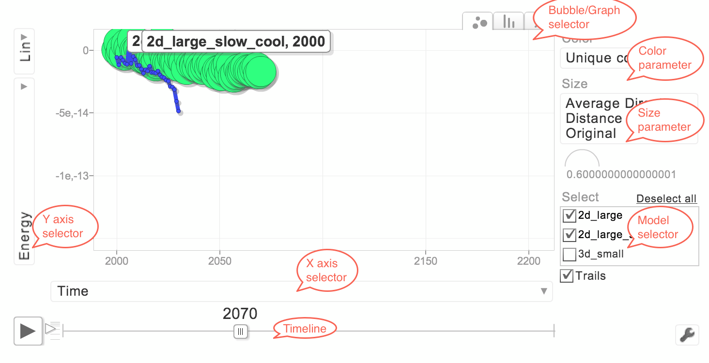
- The secondary chart (below and to the left) is used for a high level visualization of parameters between systems aggregated over the entire timeline.
With this chart you can easily view the Energy of two systems as a function of their Temperature, over the entire time.
This is done by selecting the Energy on the Y axis in the main chart, and the Temperature on the X axis, and then checking the desired models.
- The model visualization panel (above and to the right) displays an image rendered by AViz (see explanation above) for the current system time.
Moving the time line in the main chart changes the image to that of the system, and together with the main chart this shows the exact state of the system at any given time.
If there are several systems selected in the main chart, you can choose the one you want to see via the selection box beneath the image.
Each of the settings in the main chart affects the other charts:
- In order to change the axes you only need to click on the axis' name and change it to what you want, and the Chart will change respectively.
This will automatically change the axes on the secondary chart below to reflect the system parameters you have chosen to compare over all the timeline.
- In order to change the time you need to choose a place in the timeline scroll-bar, or press the "Play" button to move the timeline forward.
This will also change the image on the right to the correct system state visualization at that time.
- In order to choose the models you wish to compare you need to select the check boxes near the desired model names in the small box on the right of the main chart.
This will automatically update both the secondary chart below and the images on the right to reflect the selected systems.
- Another thing you can change is the color and size of the points in the chart, on the right of the chart, according to temperature for example.
This has the benefit of displaying more data on the main chart, and can distinguish between systems of different sizes or energies.
- You can also change the type of chart - linear to see the full graph, time bubbles to see the system evolution over time, etc...
You must run the statistic generator with the "-a" or "--aviz" flag to see the AViz pictures on the right of the page.
Read more about it in "How to generate statistics and graphs" section.